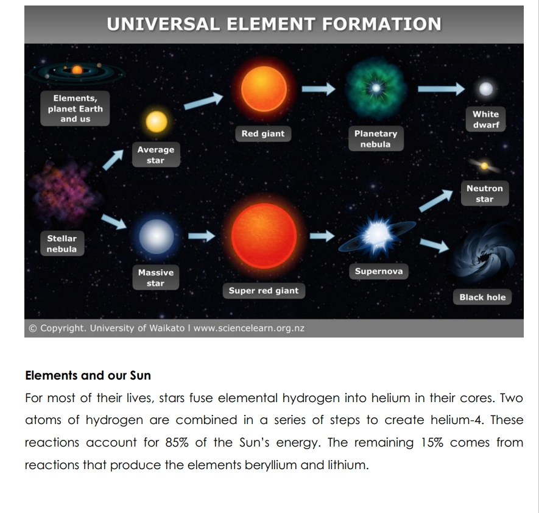
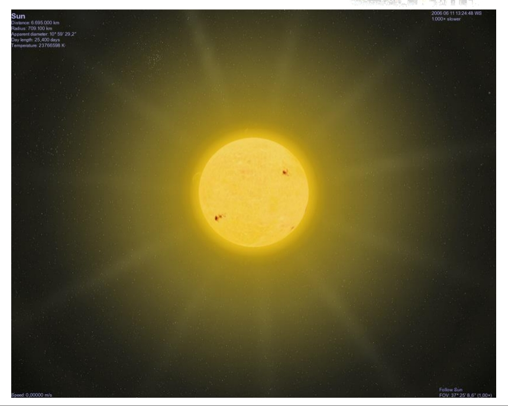
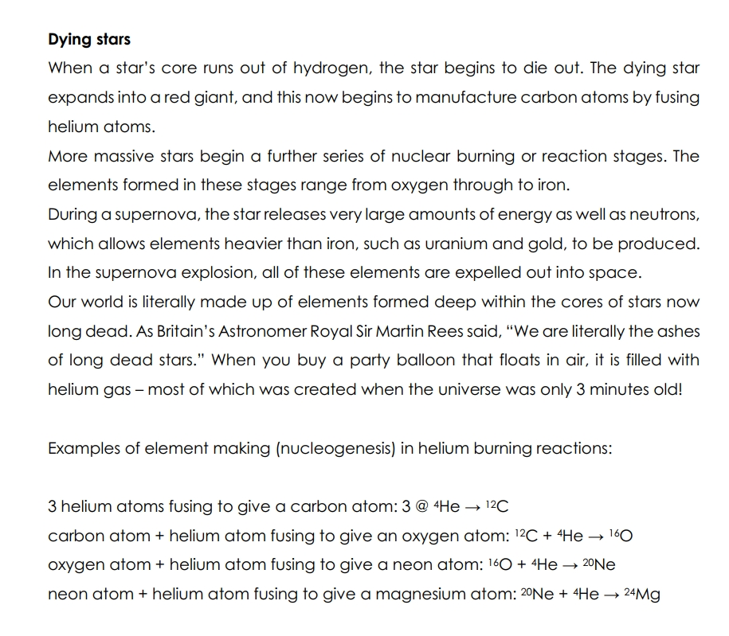

Elements and the ‘Big Bang’ theory Our world is made of elements and combinations of elements called compounds. An element is a pure substance made of atoms that are all of the same type. At present, 116 elements are known, and only about 90 of these occur naturally. During the formation of the universe some 14 billion years ago in the so-called ‘Big Bang’, only the lightest elements were formed – hydrogen and helium along with trace amounts of lithium and beryllium. As the cloud of cosmic dust and gases from the Big Bang cooled, stars formed, and these then grouped together to form galaxies. The other 86 elements found in nature were created in nuclear reactions in these stars and in huge stellar explosions known as supernovae.
Elements and our Sun For most of their lives, stars fuse elemental hydrogen into helium in their cores. Two atoms of hydrogen are combined in a series of steps to create helium-4. These reactions account for 85% of the Sun’s energy. The remaining 15% comes from reactions that produce the elements beryllium and lithium.
The energy from these nuclear reactions is emitted in various forms of radiation such as ultraviolet light, X-rays, visible light, infrared Invisible electromagnetic radiation with a wavelength between approximately 0.75 micrometres and 1 millimetre. Infrared occurs between the red end of the visible light spectrum and microwaves. All things over a certain temperature (absolute zero) absorb and emit infrared radiation. Infrared radiation and observing technologies are used in many industries from medicine to finding people buried under rubble and by the military and others in night-vision goggles. rays, microwaves and radio waves. In addition, energized particles such as neutrinos and protons are released, and it is these that make up the solar wind. Earth is in the path of this energy stream, which warms the planet, drives weather and provides energy for life. The Earth’s atmosphere is able to screen out most of the harmful radiation, and the Earth’s magnetic field can deflect the harmful effects of the solar wind.
Man-made elements Only 90 of the 116 known elements occur naturally, so where have the other 26 come from? The answer is to be found in the development of nuclear power plants and machines known as particle accelerators. Scientists discovered that, by allowing fast neutrons to collide with the common isotope of uranium known as U-238 in a nuclear reactor, the ‘new’ element plutonium was made by smashing atoms together in machines known as particle accelerators, it was discovered that new elements could be made. For example, bombarding atoms of the element curium with atoms of neon made element 106 – seaborgium.